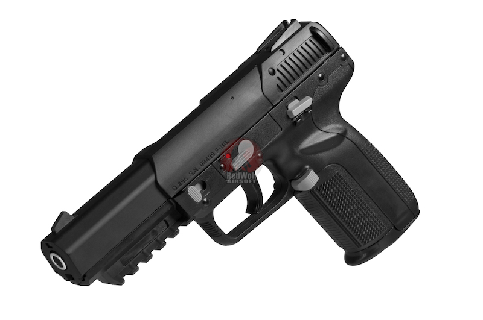

TOKYO MARUI 5.7 Five seveN
This Marui blowback pistol is based on the FN Herstal semi-automatic pistol, which was released in 2000. If you have a P90, you need to have this pistol to complete your authentic FN loadout. Firing consistantly at 230fps on 134a yet giving a crisp and solid recoil. Weighing in at 744g with magazine loaded, this is just 15grammes short of the real weight of the real steel pistol replicating the feel and the weight of the pistol!
Unit price: USD$139.99